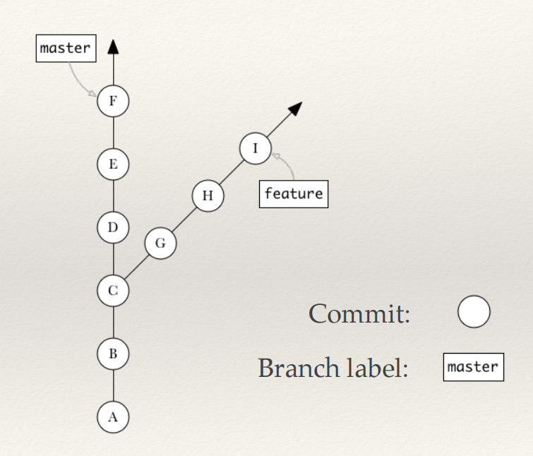

GIT
introduccion
Carlos Remuzzi / http://bit.ly/295qvwW
AGETIC 2016
Contenidos
- que cosa es
- instalación & configuración
- iniciar un proyecto
- git status
- staging area
- git add
- git commit
- git log
- git remote
- git push & git pull
- git branch
Que cosa es GIT
Sistema de manejo de código fuente

creado en el 2005 por Linus Torvalds

mantenido por Junio C Hamano
Open Source
codigo fuente disponible:
https://github.com/git/git
Git es Distribuido - DVCS
Sistemas de control de versiones locales
PRO: simple
CONTRA: fácil equivocarse, falta la dimensión colaborativa

Sistemas Centralizados - CVCS
PRO: introduce colaboración
CONTRA: depende de único servidor, posible perdida de datos

Sistemas Distribuidos - DVCS
replica total del repositorio
trabajo off-line

Instalación
Linux:
apt-get install git # Debian / Ubuntu
yum install git-all # Fedora
Windows:
Mac:
git config
configurar el ambiente de trabajo, global o local
$ git config --global user.name "Jimmy Best"
$ git config --global user.email jimmy@best.com
$ git config --local
$ git config --list
Iniciar un proyecto
crea un repositorio nuevo sin remoto:
$ git init
clonar repo con SSH:
$ git clone git@github.com:carlosremuzzi/carlosremuzzi.github.com.git
clonar repo con HTTPS:
$ git clone https://github.com/carlosremuzzi/carlosremuzzi.github.com.git
git status
verificar el estadao de tu repositorio
$ git status
On branch master
Your branch is up-to-date with 'origin/master'.
Changes to be committed:
(use "git reset HEAD ..." to unstage)
new file: addedfile.txt
Changes not staged for commit:
(use "git add ..." to update what will be committed)
(use "git checkout -- ..." to discard changes in working directory)
modified: index.html
Untracked files:
(use "git add ..." to include in what will be committed)
newfile.txt

git add
Añadir cambios
$ git add
git commit
registrar los cambios
$ git commit # la staging area
$ git commit -a # todos los archivos
las ramas
git log
Ver la historia de tus commits
El hash del commit es de 40 digitos pero podemos usar solo los primeros 6 o 7
$ git log
commit 0f1bf4b1b5cb74342de9c1f6280b39ca5a1f79eb
Author: Carlos Remuzzi
Date: Tue Apr 19 20:22:57 2016 +0000
adding configuration
git remote
Configurar un repositorio remoto
$ git remote add URL_DEL_REPOSITORIO
git push
Enviar a repositorio remoto
$ git push -u origin master
git pull
Jalar del repositorio remoto
$ git pull
git branch
Crear una nueva rama
$ git branch NOMBRE_DE_LA_RAMA # crea la rama
$ git checkout -b NOMBRE_DE_LA_RAMA # crea la rama y entra a la misma
git checkout
Cambiar de rama
$ git checkout NOMBRE_DE_LA_RAMA
git merge
Unir dos ramas
$ git merge NOMBRE_DE_LA_SEGUNDA_RAMA
Mas Herramientas
- blame
- cherry-pick
- reset
- rebase
- reflog
- squash & split
- bisect
FIN
lecturas recomendadas- git --help
- pagina web de GIT: git-scm.com
- blog de Junio C Hamano: git-blame.blogspot.com
- GIT avanzado: bit.ly/git-pycon-2015